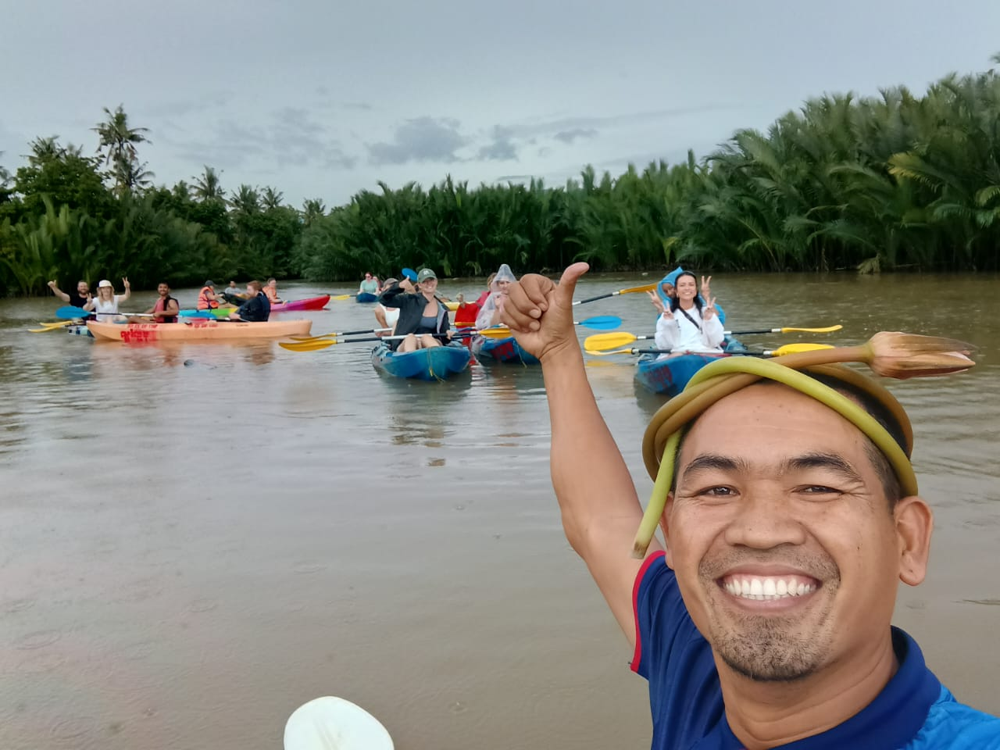
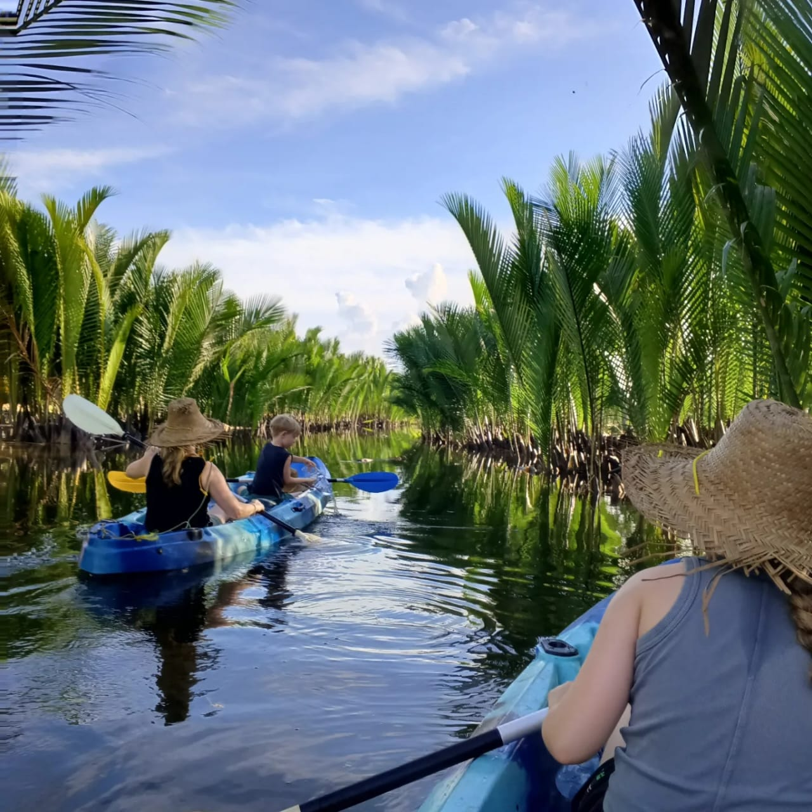
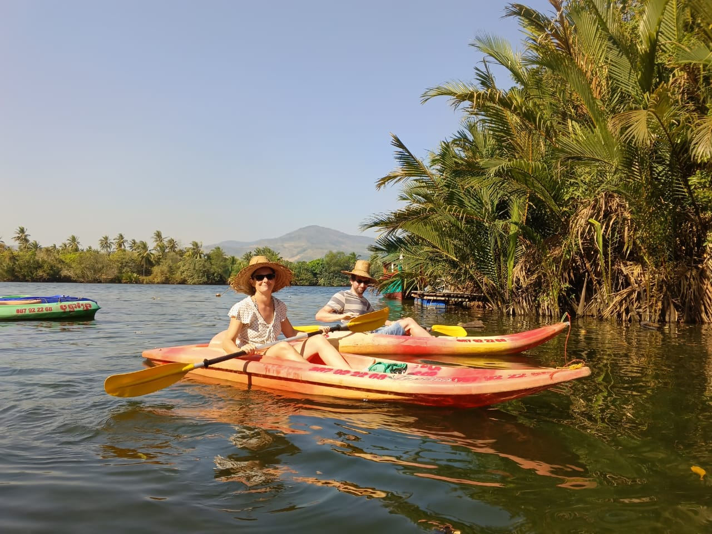

$25
Kayak the Green Cathedral
Join me for a kayaking trip through Kampot’s famous mangrove forests. I’ll explain the local fauna and flora, show you how to make lotus crowns, and more! We’ll end the day with a traditional Khmer lunch and a swim at a secluded sandy beach.
Tour Includes
- Pick up and drop off at your hotel
- Kayaks
- Traditional Khmer Lunch
- Drinks
Per person
$25